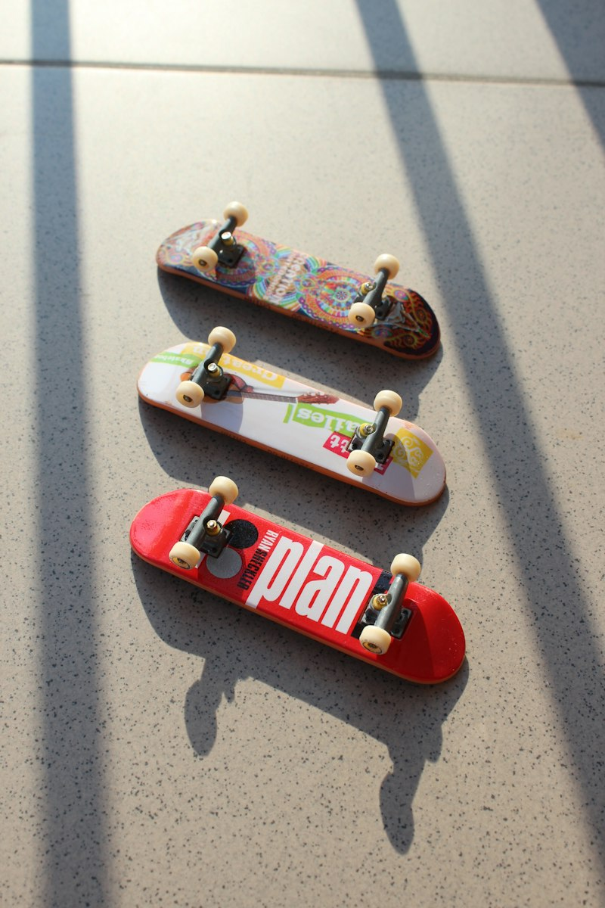

Interests & Creative Hobbies
Beyond lectures and computing assignments at UMSKAL, these four pursuits keep my mind sharp, my creativity flowing, and my body active.
 Digital Entertainment
Digital Entertainment
Gaming
Engaging in tactical multiplayer, open-world adventures, and competitive titles. Gaming trains rapid decision-making, strategic resource management, spatial awareness, and team communication.
 Software Logic
Software Logic
Coding & Web Development
Writing clean, functional code and architecting responsive web interfaces. As a Business Computing student, coding is the vehicle that transforms commercial ideas into living digital solutions.
 Creative Media
Creative Media
Video & Graphic Editing
Crafting engaging video edits, dynamic montage pacing, motion graphics, and sleek visual banners. Editing teaches me how visual rhythm and aesthetic balance captivate audience attention in e-commerce.

Outdoor FitnessPlaying Rollerblade
Cruising on inline skates across smooth park trails, waterfront promenades, and urban circuits. Rollerblading provides an invigorating cardio workout, building balance, agility, and mental clarity.
How My Hobbies Fuel Business Computing
Each personal interest feeds directly into my academic and professional toolkit in Business Computing: gaming sharpens strategy, coding executes technical logic, editing elevates digital marketing, and rollerblading keeps me physically energized.